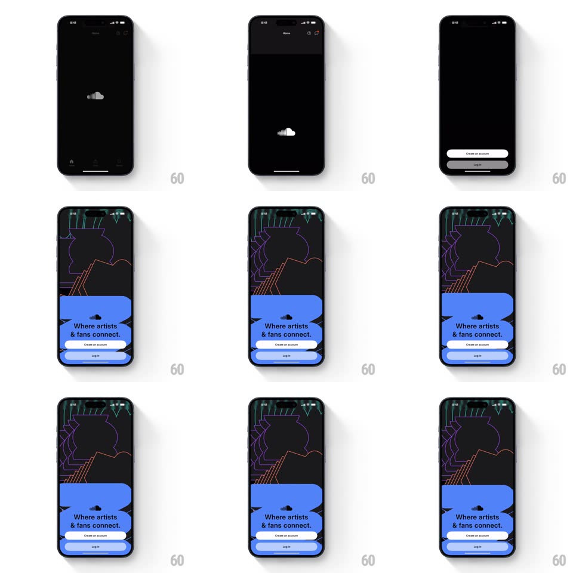

Media
Frame-by-frame

Rebuild this animation 1:1: SoundCloud's splash-to-login - the cloud logo holds on black, then an illustrated card rockets up from the bottom and the screen transforms into a neon line-art scene with a blue panel carrying "Where artists & fans connect."

Rebuild this animation 1:1: SoundCloud's splash-to-login - the cloud logo holds on black, then an illustrated card rockets up from the bottom and the screen transforms into a neon line-art scene with a blue panel carrying "Where artists & fans connect." ## Integration Integration: stack-agnostic spec - springs given as stiffness/damping, timed motions as duration + curve; map every value to your framework and animation library of choice. ## Scene Splash: black screen, small white SoundCloud cloud mark centered. Landing: dark background covered in neon line-art (speaker, waveforms in green/purple/orange), a big blue rounded panel bottom-half with the cloud glyph, "Where artists & fans connect." headline, white "Create an account" button, "Log in" below. ## Motion spec Pattern: bottom-card takeover transition. - Splash logo fades to gray (300ms), then a coral/yellow illustrated card slides up from off-screen bottom (spring ~280/24, ~500ms) carrying the headline and CTA. - The card keeps rising and expands: its background color floods upward to fill the screen (500ms ease-in-out) while the neon line-art draws in behind (stroke draw-on, ~800ms, staggered per shape). - The panel settles into its final blue with the headline re-setting line by line (each line rises 8px + fades, 200ms, 60ms apart). - Buttons fade in last (Create an account, then Log in 100ms later, 250ms each). ## Calibration - The card's corner radius grows as it expands (24px -> 40px at the top corners) so it reads as a sheet becoming a panel. - Line-art is decorative: draw-on happens once, no looping. ## Reduced motion Splash crossfades to the final composed screen; line-art appears pre-drawn. ## Don't miss - The headline color flips during the flood (dark on coral -> dark on blue) - animate the text color with the background. - The cloud glyph in the panel is white on blue, matching the splash mark's shape.